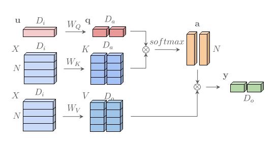
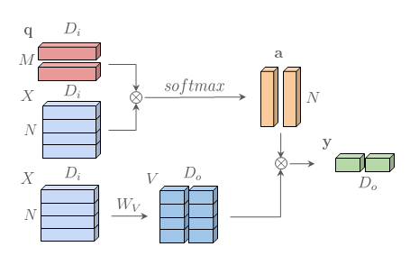

Attention, Please! Revisiting Attentive Probing Through the Lens of Efficiency
Abstract
As fine-tuning becomes impractical at scale, probing is emerging as the preferred evaluation protocol. However, standard linear probing can understate the capability of models whose pre-training optimizes local representations rather than an explicit global representation. This motivates attentive probing, an alternative that uses attention to selectively aggregate patch-level features. Despite growing adoption, attentive probing is still underexplored: existing approaches are often over-parameterized and computationally inefficient. In this work, we revisit attentive probing through the lens of the accuracy vs parameter-efficiency trade-off. We present the first comprehensive study of existing methods, analyzing their design choices and benchmarking their performance. Building on these insights, we propose efficient probing (EP), a lightweight yet effective multi-query cross-attention mechanism that eliminates redundant projections and reduces the number of trainable parameters. Across multiple benchmarks and pre-training paradigms, EP consistently outperforms linear probing and previous attentive probing methods, and remains effective when combined with parameter-efficient fine-tuning. Beyond evaluation, our analysis uncovers emerging properties of EP, including complementary attention maps, which open new directions for leveraging probing beyond protocol design.
Pre-training Paradigms: Global vs Local Representations
Modern vision encoders are trained under different pre-training families. Some promote global semantic aggregation, while others preserve rich local spatial structure.
Global-style pre-training (e.g., CLIP) encourages aggregation of information into a single representation. Evaluation protocols commonly rely on global pooling.
Evaluation Protocols: From Global Bias to Spatial Awareness
Most evaluation protocols for classification rely on a single global representation — even when pre-training promotes spatially distributed local semantics.
k-NN uses the global image representation for similarity computation.
The Landscape of Attentive Probing Methods
Attentive probing has emerged in multiple forms across literature. However, these methods differ substantially in query design, key/value transformations, attention mechanisms, and pooling strategies. To our knowledge, no unified comparison of this design space has been conducted.
- Query Source: learned vectors, input-dependent queries, or pooled features.
- Transformations: projection-heavy vs projection-free designs.
- Pooling Strategy: weighted aggregation vs learned transformations.
Many existing attentive probing approaches introduce redundant projections and unnecessary parameter overhead.
This motivates revisiting attentive probing through the lens of accuracy versus efficiency.
From Vanilla MHCA to Efficient Probing (EP)
Efficient Probing revisits multi-head cross-attention under the lens of accuracy vs parameter-efficiency. We simplify the architecture while preserving expressiveness.
Vanilla Multi-Head Cross Attention

• Learn WQ, WK, and WV
• Multiple projection matrices
• Higher parameter cost
• Redundant transformations
Efficient Probing (EP)

• Remove WQ
• Simplify WK
• Learn M queries directly in feature space
• Fewer parameters, same or better accuracy
EP removes redundant projections and learns multiple query vectors directly in the encoder feature space. This drastically reduces trainable parameters while preserving expressive cross-attention over spatial tokens.
Efficient probing is not about adding more attention — it is about removing unnecessary projections.
Multi-Query Efficient Probing (EP)
Each query learns complementary spatial patterns. Hover over a query to isolate its attention region.
Accuracy vs Parameters
Explore the accuracy-efficiency trade-off across models, backbone sizes and downstream datasets.
A New Dominant Efficiency Frontier
We compare Efficient Probing (EP) against more than 40 LoRA variants, BitFit, and LayerNorm tuning on a frozen MAE ViT-B/16 backbone. The result is not just competitive performance — it is a strictly better accuracy–parameter trade-off.
- Single-layer LoRA improves over linear probing, but remains dominated by EP in the accuracy–parameter plane.
- All-layer LoRA achieves higher accuracy, but requires substantially more parameters and modifies the representation more aggressively.
- The hybrid LoRA + EP configurations form a new dominant Pareto frontier, strictly improving over both pure EP and pure LoRA.
Better than both pure EP and pure LoRA — using fewer parameters.
Efficient Probing is not redundant with PEFT. It is complementary.
LoRA adapts the representation. EP selectively aggregates it. Together, they define a new regime of parameter-efficient learning.
Get in Touch
Citation
If you find our work interesting, please consider citing it:
@misc{psomas2026attentionpleaserevisitingattentive,
title={Attention, Please! Revisiting Attentive Probing Through the Lens of Efficiency},
author={Bill Psomas and Dionysis Christopoulos and Eirini Baltzi and Ioannis Kakogeorgiou and Tilemachos Aravanis and Nikos Komodakis and Konstantinos Karantzalos and Yannis Avrithis and Giorgos Tolias},
year={2026},
eprint={2506.10178},
archivePrefix={arXiv},
primaryClass={cs.CV},
url={https://arxiv.org/abs/2506.10178},
}
Contact
If you have any further questions, please reach out to:
vasileios.psomas@fel.cvut.cz
dxristopoulos@mail.ntua.gr
Institutions & Collaborations